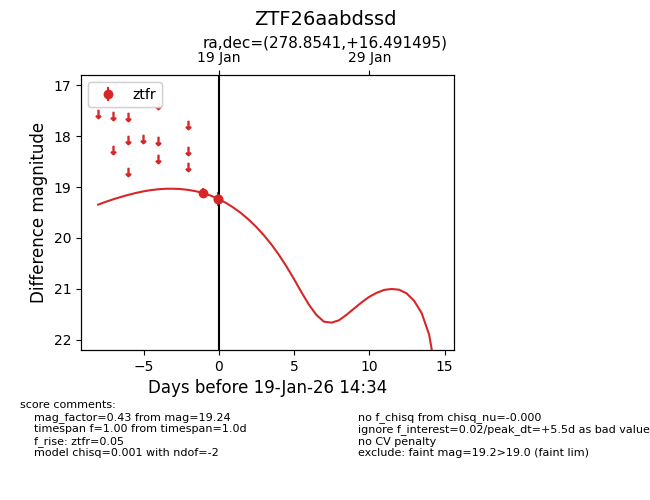
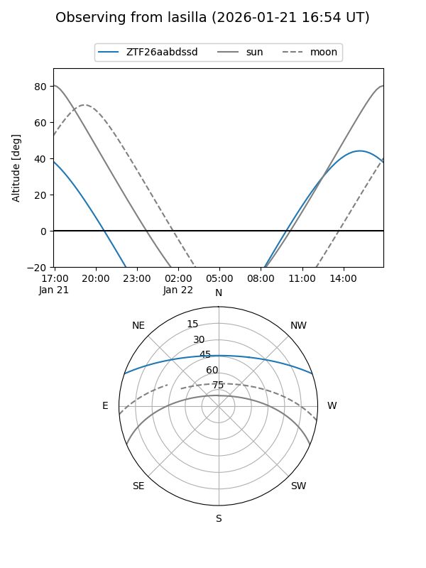
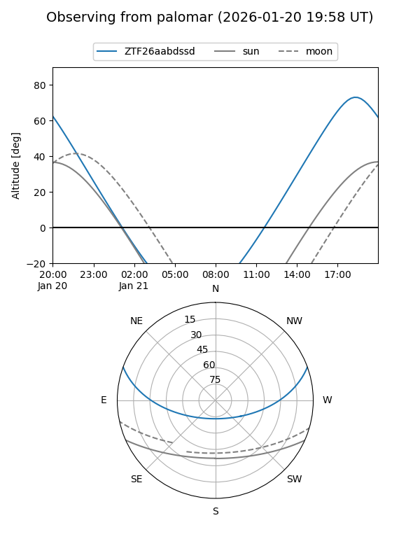

ZTF26aabdssd
Target ZTF26aabdssd at 2026-01-19 14:37
Aliases and brokers:
FINK: link
Lasair: link
ALeRCE: link
alt names
ZTF26aabdssd (ztf,fink_ztf)
Coordinates:
equatorial (ra, dec) = 278.8541,+16.49150
equatorial (HMS+DMS) = 18:35:24.98,+16:29:29.38
galactic (l, b) = (46.0043,+10.89734)
Flags:
Photometry:
last ztfr=19.24
3 ztfr detections
Lightcurve

Visibility


Additional plots